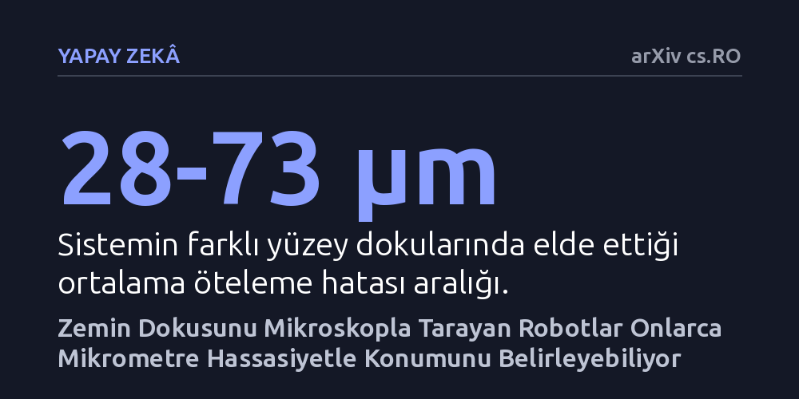

YAPAY-ZEKA · arXiv cs.RO · 2026-10-20
Araştırmacılar, hareketli robotların doğal zemin dokusunu mikroskopla görüntüleyerek mikrometre düzeyinde konumlanıp konumlanamayacağını inceledi. Geliştirilen optik sistem, farklı yüzeylerde 28 ila 73 mikrometre hata payıyla küresel konum belirlemeyi başardı.
Genellikle yalnızca pahalı ve sabit optik düzeneklerle ulaşılabilen mikrometre hassasiyetindeki konumlandırmanın, hareketli ve düşük maliyetli robotlarda da mümkün olduğunu gösteriyor.

Bir fabrikanın zemininde, depoda ya da ameliyathanede dolaşan hareketli robotların nerede olduklarını tam olarak bilmeleri gerekir. Günümüzde GPS gibi uydu sistemleri kapalı alanlarda çalışmaz; tekerlek dönüşlerini sayan sistemler zamanla kayar; kameralar ve lazer tarayıcılar ise genellikle santimetre ya da birkaç milimetre seviyesinde doğruluk sunar. Oysa mikroelektronik üretimi veya hassas montaj gibi alanlarda robotların milimetrenin çok altında, yani mikrometre seviyesinde nerede durduğunu bilmesi beklenir.
Bu düzeydeki hassasiyet bugüne kadar neredeyse tamamen yere sabitlenmiş pahalı lazerli veya optik takip sistemleriyle sağlanabiliyordu. Araştırmacılar şu temel soruyu sordu: Dışarıdan pahalı takip cihazları kurmak yerine, robotun tam altındaki zemine çok yakından baksak ne olur? İlk bakışta pürüzsüz görünen sıradan bir masa veya zemin bile mikroskop altında benzersiz vadiler, tepeler ve desenler barındırır. İşte bu çalışma, zeminin doğal mikroskobik desenini bir tür parmak izi gibi kullanarak robotun yerini bulmayı hedefliyor.
Araştırma ekibi, bir mikroskop lensini kamerayla birleştirerek zemine bakan özel bir optik algılayıcı tasarladı. Ancak mikroskop düzeyinde görüntü almak ciddi mühendislik zorluklarını beraberinde getiriyor. Çok yüksek büyütme oranlarında kameranın odak derinliği saç teli kalınlığına kadar düşer; en küçük eğim bile görüntüyü bulanıklaştırabilir. Yazarlar, optik büyütme oranı ile fiziksel konum doğruluğu arasındaki matematiksel ilişkiyi modelleyerek kalibrasyon ve odaklama sorunlarını çözdü.
Sistemi titizlikle sınamak için mikrometre hassasiyetinde hareket edebilen kalibre edilmiş bir kartezyen mekanizma (gantry) kuruldu. Bu düzenekle farklı yüzey dokularının yüksek çözünürlüklü mikroskobik haritaları çıkarıldı. Ardından sistemin başarısını ölçmek amacıyla her bir yüzey için ayrılan 1.007 bağımsız test görüntüsü sisteme soruldu ve robotun bu harita üzerinde kendini ne kadar hatasız bulabildiği hesaplandı.
Yapılan deneylerde sistem, test edilen tüm yüzeylerdeki 1.007 sorgu görüntüsünün tamamında robotun yerini başarıyla tespit etti. Elde edilen ortalama öteleme hatası 28 ile 73 mikrometre arasında kaldı. Bir mikrometrenin milimetrenin binde biri olduğu düşünüldüğünde, hareket eden bir algılayıcı için bu hata payı oldukça etkileyici bir doğruluğa işaret ediyor. Üstelik araştırmacılar, bağımsız bir piksel karşılaştırma yöntemiyle (fotometrik hizalama) öznitelik tabanlı konum kestirimini kıyasladıklarında iki yöntemin yaklaşık 9 mikrometre hata payı içinde birbiriyle örtüştüğünü gördü.
Ekip yalnızca mekanik düzenekle yetinmeyip sistemi düşük maliyetli, tekerlekli bir prototip mobil robot üzerine de taşıdı. Haritası daha önce çıkarılmış alanda gezinen küçük robot, mikroskop kamerasını kullanarak onlarca mikrometre hassasiyetle konumunu korumayı başardı. Deneylerin bir diğer çarpıcı yanı, sistemin ortamdaki sıcaklık değişimlerine bağlı olarak zeminde meydana gelen mikrometre ölçeğindeki ısıl genleşmeyi bile ayrıştırabilmesi oldu.
Bu çalışmanın ortaya koyduğu en önemli sonuç, yüksek hassasiyetli konumlandırmanın yalnızca binlerce dolarlık sabit dış kameralara veya lazer kafeslerine mahkûm olmadığını göstermesidir. Doğal zemin dokusunun mikroskobik düzeydeki rastgele yapısı, hiçbir yapay barkod veya kılavuz çizgiye ihtiyaç duymadan güvenilir bir referans ağı sunabiliyor.
Yine de laboratuvar ortamından pratik sanayiye giden yolda aşılması gereken engeller bulunuyor. Mikroskop lenslerinin toz, çizik veya yağ gibi kirliliklerden nasıl etkileneceği ve engebeli zeminlerde odak takibinin nasıl sürdürüleceği henüz açık uçlu sorular arasında yer alıyor. Ancak çalışma, minyatür robotların ve hassas üretim araçlarının kendi ayakları üzerinde mikrometre hassasiyetine ulaşabileceğine dair somut bir kanıt sunuyor.